EditBook은 선생님들과 편집장이 교과서 원고를 함께 다듬는 웹 편집실입니다. 원고는 지금처럼 한글(hwp, hwpx)이나 워드(docx)로 쓰고, 이 사이트에는 그 파일을 올려 버전을 쌓고 수정 요청을 주고받습니다. 설치할 프로그램은 없고, 주소 하나로 컴퓨터·휴대폰 어디서나 접속합니다.
지금 쓸 수 있는 것(1단계)은 로그인, 책 만들기, 파트(단원) 나누기, 담당 선생님 정하기, 계정 관리입니다. 원고 올리기·미리보기·수정 요청은 다음 단계에서 열립니다(8절 참고).
| 역할 | 누구 | 할 수 있는 일 |
|---|---|---|
| 관리자 | 사이트 운영자(처음에는 교목님) | 선생님 계정 만들기와 비밀번호 초기화, 책 만들기, 책의 편집장 지정 |
| 편집장 | 출판사 편집장(책마다 1명 이상) | 파트 만들기, 담당 선생님 지정, 참여자 초대, 수정 요청과 확인(다음 단계) |
| 선생님(저자) | 집필진 | 자기 파트 원고 올리기와 요청에 답하기(다음 단계), 같은 책의 다른 파트 읽기 |
한 사람이 여러 책에 서로 다른 역할로 참여할 수 있습니다.
주소는 https://editbook.vercel.app 입니다. 크롬·엣지·사파리 어느 브라우저든 되고, 휴대폰에서도 같은 주소로 들어갑니다. 계정은 관리자가 만들어 아이디와 임시 비밀번호를 알려 줍니다.
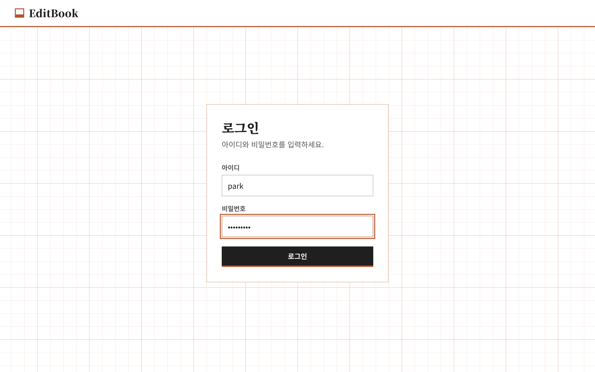
아이디나 비밀번호가 틀리면 아래처럼 빨간 안내가 뜹니다. 같은 아이디로 15분 안에 10번 틀리면 15분 동안 잠깁니다. 비밀번호를 잊었으면 관리자에게 초기화를 부탁하세요(6절 참고).
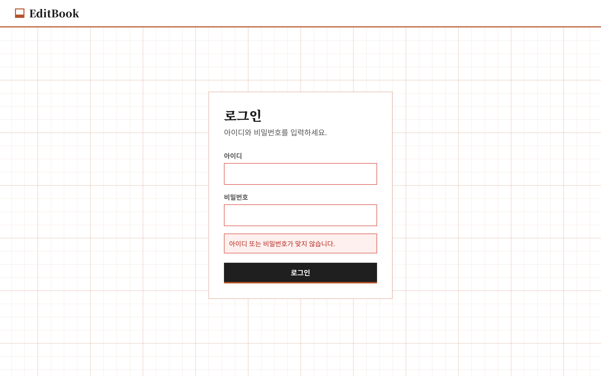
임시 비밀번호로 처음 들어오면 아래 화면이 나옵니다. 8자 이상으로 새 비밀번호를 두 번 같게 넣고 비밀번호 변경을 누르면 책 목록으로 넘어갑니다. 이 화면을 건너뛸 수는 없습니다.
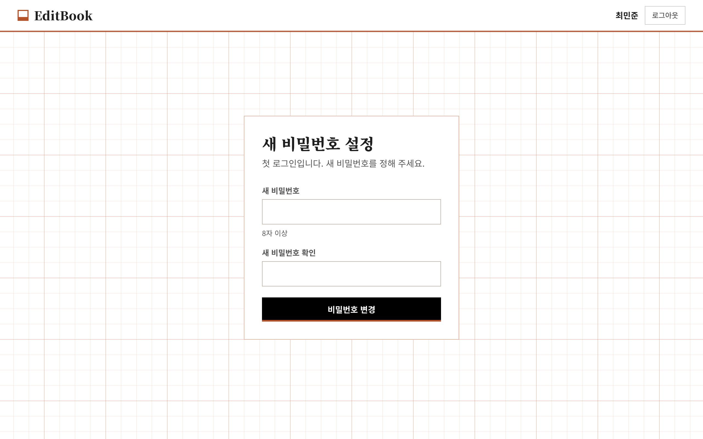
로그인하면 내가 참여 중인 책이 카드로 나옵니다. 카드에는 편집장 이름, 교사 수, 파트 수와 함께 이 책에서 나의 역할(편집장 또는 교사)이 붙어 있습니다. 카드를 누르면 그 책의 화면으로 들어갑니다.
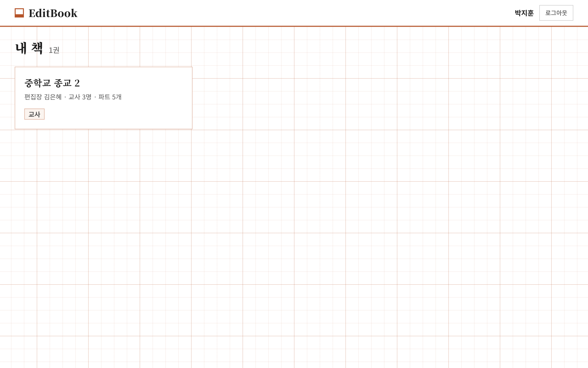
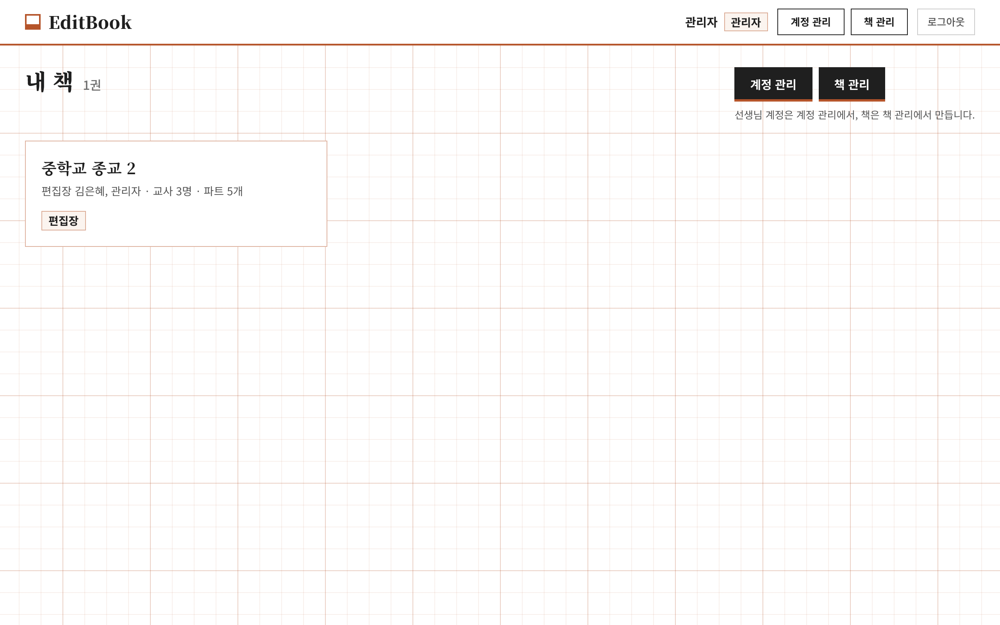
책 하나를 열면 파트(단원) 목록이 순서대로 나옵니다. 왼쪽에는 내 책 목록이 있어 다른 책으로 바로 옮겨갈 수 있습니다.
윗부분에는 책 제목, 편집장·교사·파트 수, 그리고 세 가지 개수 칩이 있습니다.
| 칩 | 뜻 |
|---|---|
| 내 차례 | 내가 응답해야 하는 요청이 있는 파트 수 |
| 상대 차례 | 상대방이 확인하거나 검토 중인 파트 수 |
| 완료 | 편집장이 완료로 표시한 파트 수 |
파트 한 줄에는 순서, 제목, 메모, 담당 선생님, 진행 칸, 상태가 나옵니다. 내가 담당인 파트에는 "내 파트" 꼬리표가 붙습니다. 지금은 원고 올리기가 아직 없어서 모든 파트가 원고 없음이며, 다음 단계부터 상태가 바뀝니다.
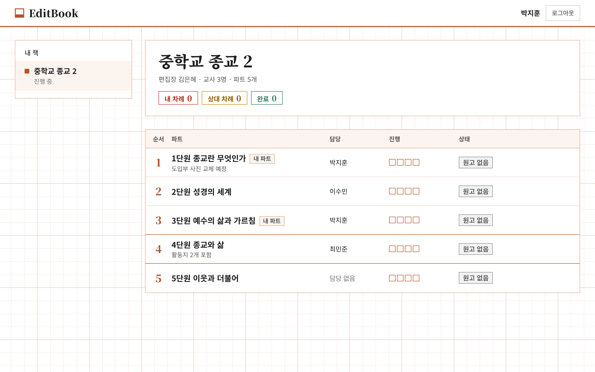
편집장이나 관리자에게는 오른쪽 위에 참여자·파트 관리 버튼이 보입니다. 교사에게는 이 버튼이 없습니다.
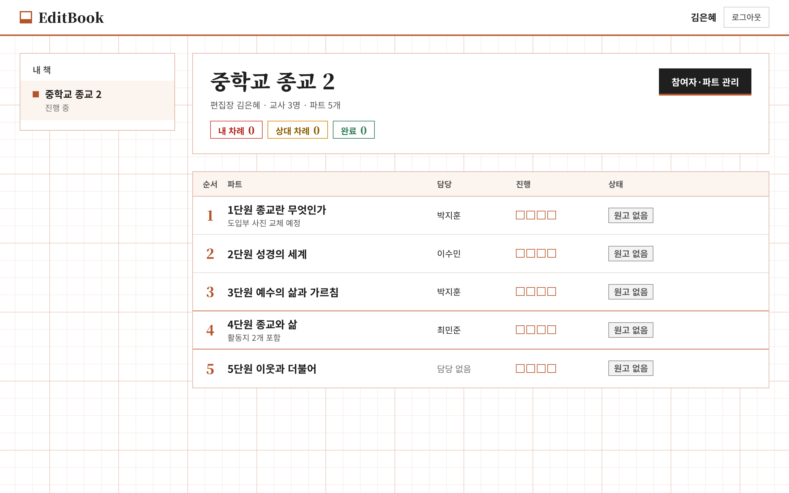
휴대폰에서는 같은 내용이 위아래로 쌓여 보입니다. 맨 위 "내 책으로"를 누르면 책 목록으로 돌아갑니다.
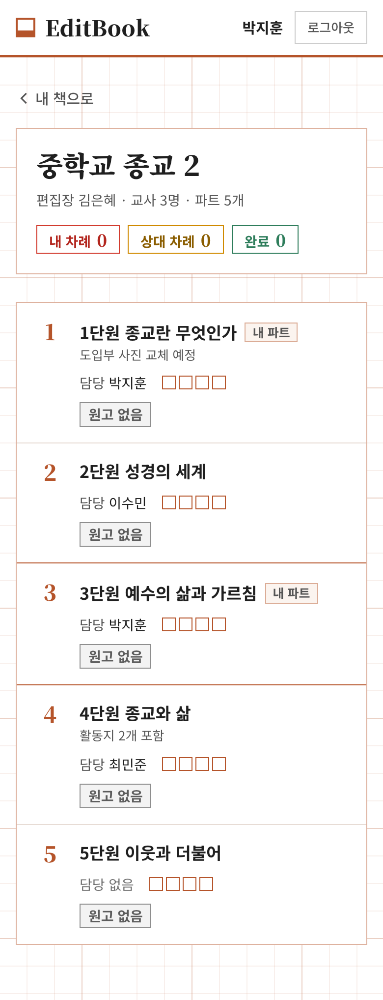
책 화면의 참여자·파트 관리 버튼을 누르면 이 화면이 열립니다. 편집장과 관리자만 들어올 수 있고, 보관된 책은 바꿀 수 없습니다.
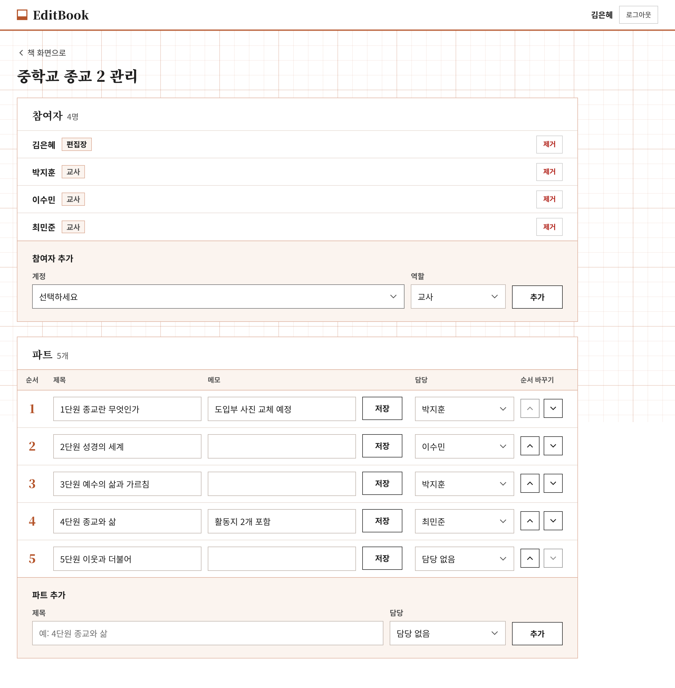
계정 칸에 "추가할 계정이 없습니다"라고 나오면, 사이트의 모든 계정이 이미 이 책에 들어와 있다는 뜻입니다. 새 선생님을 넣으려면 먼저 관리자가 계정 관리에서 계정을 만들어야 합니다(6절).
같은 사람을 여러 책에 다른 역할로 넣을 수 있습니다. 한 책에 편집장이 여러 명이어도 됩니다.
관리자로 로그인하면 "내 책" 화면 오른쪽 위와 상단 바에 계정 관리와 책 관리 버튼이 보입니다. 새 책을 시작하는 순서는 계정 만들기 → 책 만들기(편집장 지정) → 편집장이 참여자·파트 관리에서 선생님과 파트 넣기입니다.
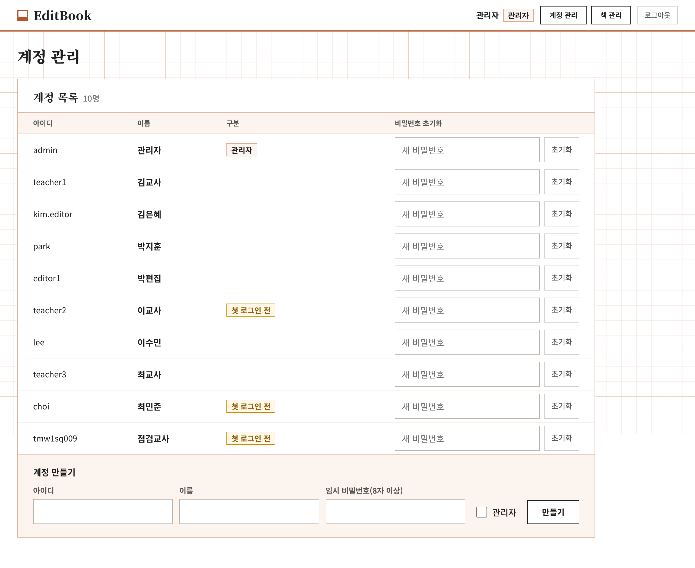
선생님 계정 만들기
. _ @ - 만 쓸 수 있고 공백은 안 됩니다. 대문자로 적어도 소문자로 저장됩니다. 이메일 주소를 아이디로 써도 됩니다.비밀번호 초기화
계정 삭제는 없습니다. 더 쓰지 않는 계정은 책에서 제거하고 그대로 두면 됩니다.
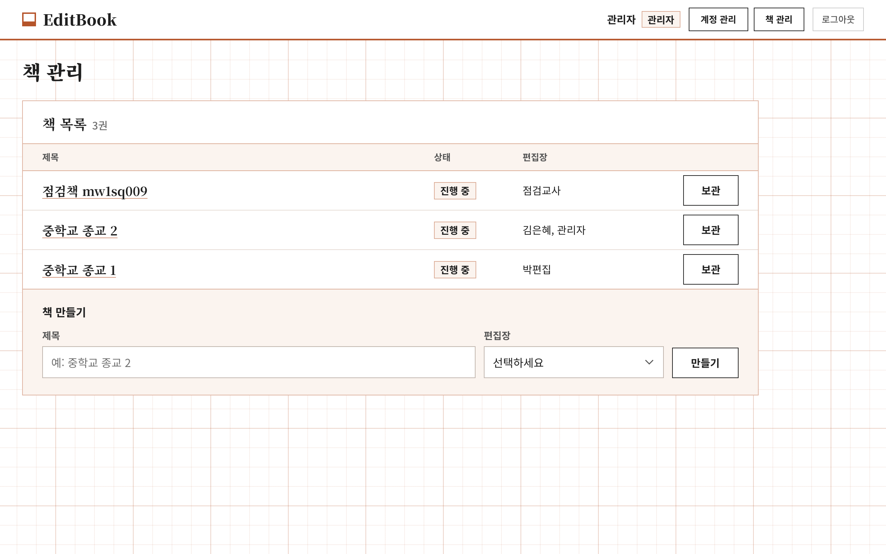
| 증상 | 원인과 해결 |
|---|---|
| "아이디 또는 비밀번호가 맞지 않습니다" | 아이디에 공백이나 대문자가 섞였는지, 비밀번호 자판(한/영)이 맞는지 확인합니다. 계속 안 되면 관리자에게 초기화를 부탁합니다. |
| "로그인 시도가 너무 많습니다. N분 뒤에 다시 시도하세요" | 15분 안에 10번 틀리면 15분 동안 잠깁니다. 기다렸다가 다시 하거나 관리자에게 초기화를 부탁합니다. |
| 로그인했는데 새 비밀번호 화면만 나온다 | 첫 로그인이거나 관리자가 초기화한 계정입니다. 새 비밀번호를 정하면 지나갑니다. |
| 갑자기 로그아웃됐다 | 관리자가 비밀번호를 초기화했거나 본인이 비밀번호를 바꾸면 모든 기기에서 로그아웃됩니다. 다시 로그인하세요. |
| 책이 하나도 안 보인다 | 아직 어떤 책에도 참여자로 들어가 있지 않습니다. 편집장에게 추가를 부탁합니다. |
| [참여자·파트 관리] 버튼이 없다 | 교사 역할에는 이 버튼이 없습니다. 편집장이나 관리자만 할 수 있습니다. |
| 참여자 추가 칸에 "추가할 계정이 없습니다" | 모든 계정이 이미 이 책에 들어와 있습니다. 관리자가 계정 관리에서 새 계정을 먼저 만들어야 합니다. |
| 책이 흐리게 보이고 바꿀 수 없다 | 보관된 책입니다. 관리자가 [복원]하면 다시 쓸 수 있습니다. |
| 화면이 아예 안 열린다 | https://editbook.vercel.app/api/health 를 열어 봅니다. ok: true 가 아니면 서버 문제이니 운영자(교목님)에게 알립니다. |
원고 작업은 다음 단계부터 이 사이트 안에서 이루어집니다. 파일을 메일이나 카톡으로 주고받지 않습니다.
2단계의 첫 작업은 실제 원고 파일 몇 개로 PDF 변환 품질을 확인하는 것입니다. 한글·워드 원고 샘플이 준비되면 시작합니다.